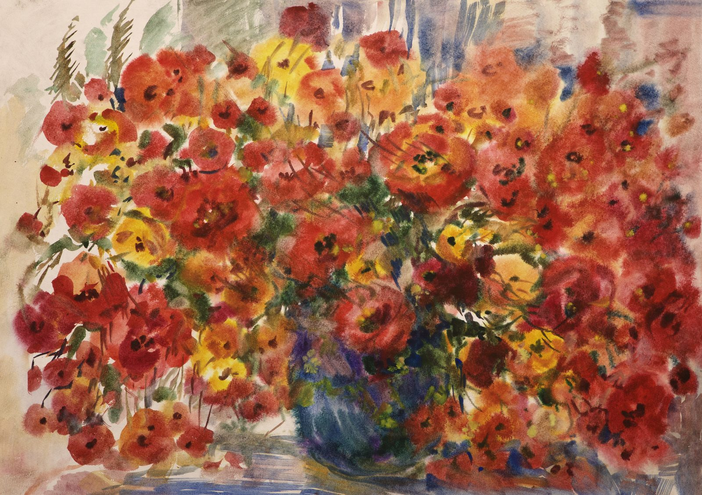
Букет маківКвіти

Майстер акварелі «по-мокрому»
Понад пів століття він писав воду водою: Чорне море, кримський берег, одеські квіти. Чиста акварель «по-мокрому», за один сеанс і без білил.
Василь Понікаров присвятив життя акварелі, найменш поблажливій з усіх технік. Його роботи зберігаються в музеях і приватних колекціях Європи, Ізраїлю та США; архів майстерні береже родина.
«Король квітів та імператор соняшників»М. Шериф, мистецтвознавець, Александрія
Вибрані роботи
Добірка з родинного архіву. Кожну роботу внесено до каталогу з роком, розмірами та станом; назви й дати звіряються з каталогом майстерні.



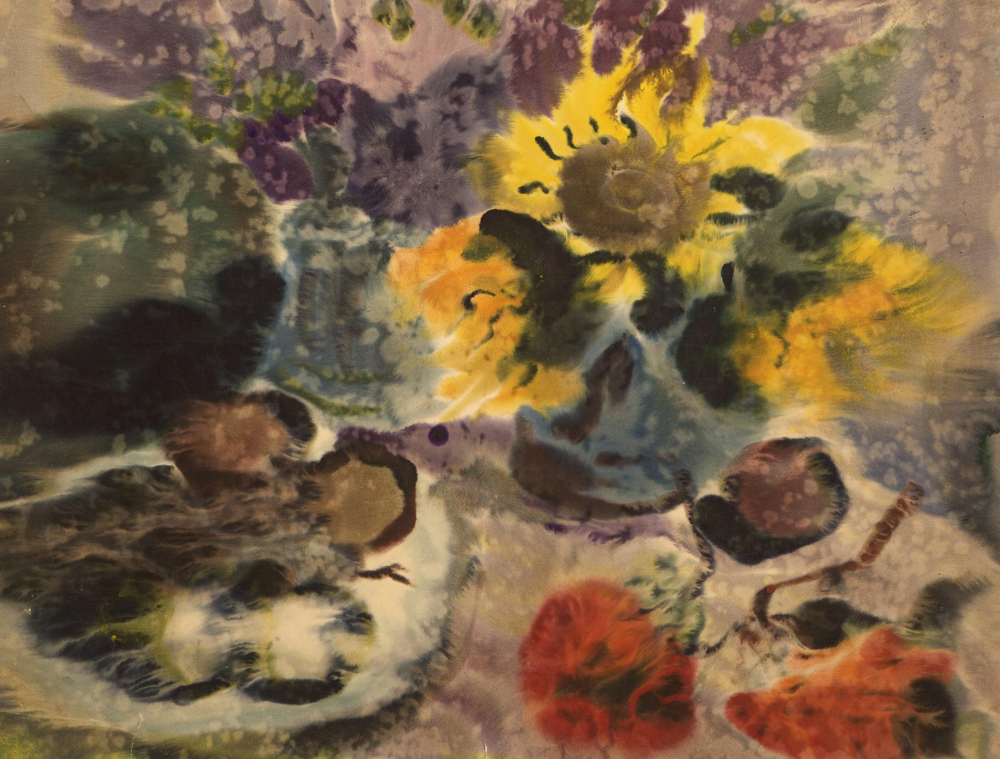


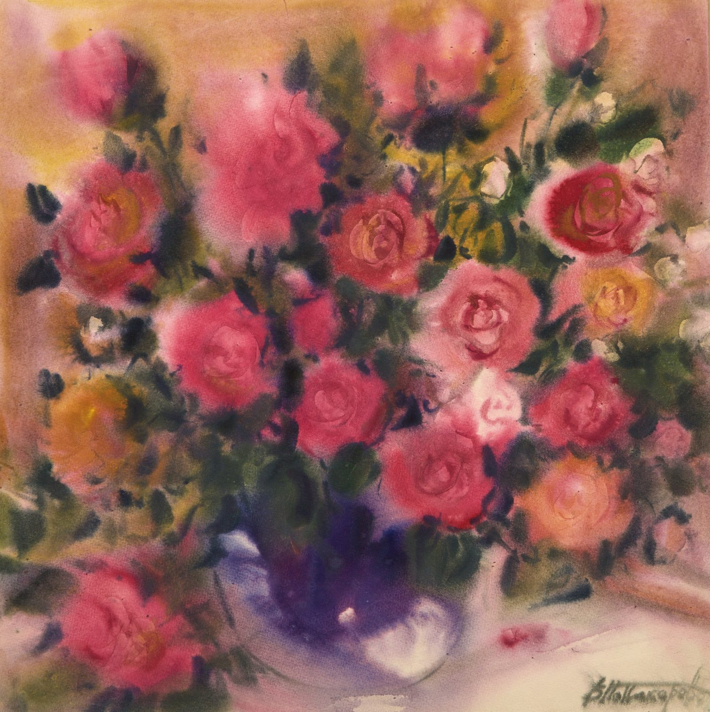

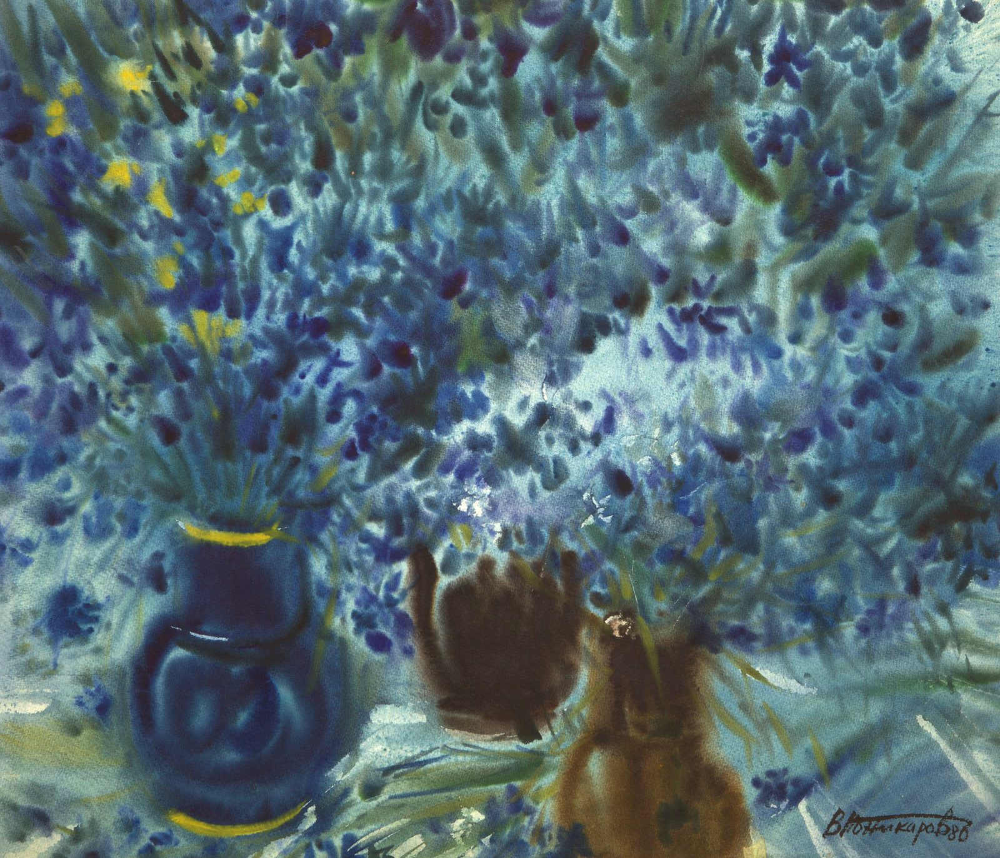

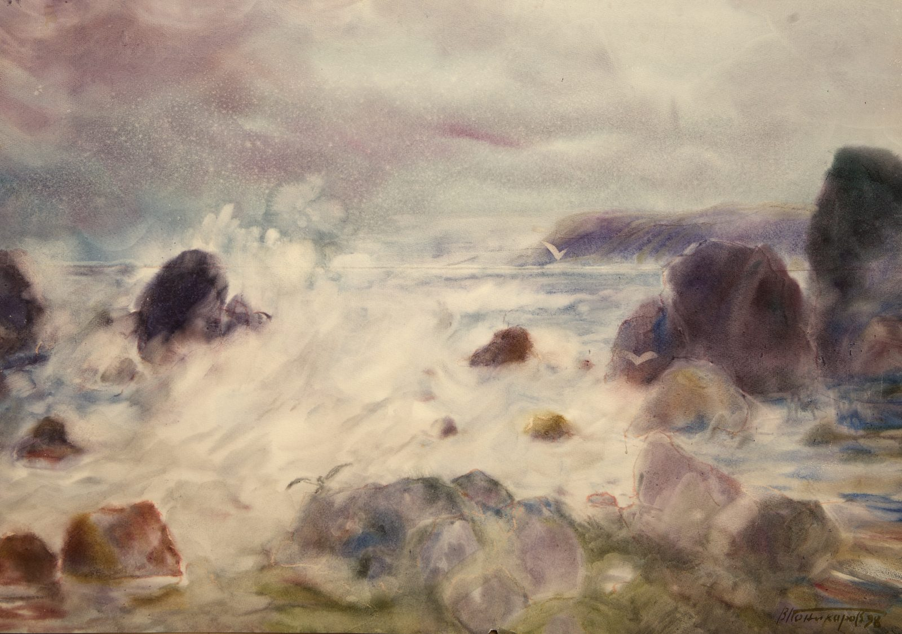
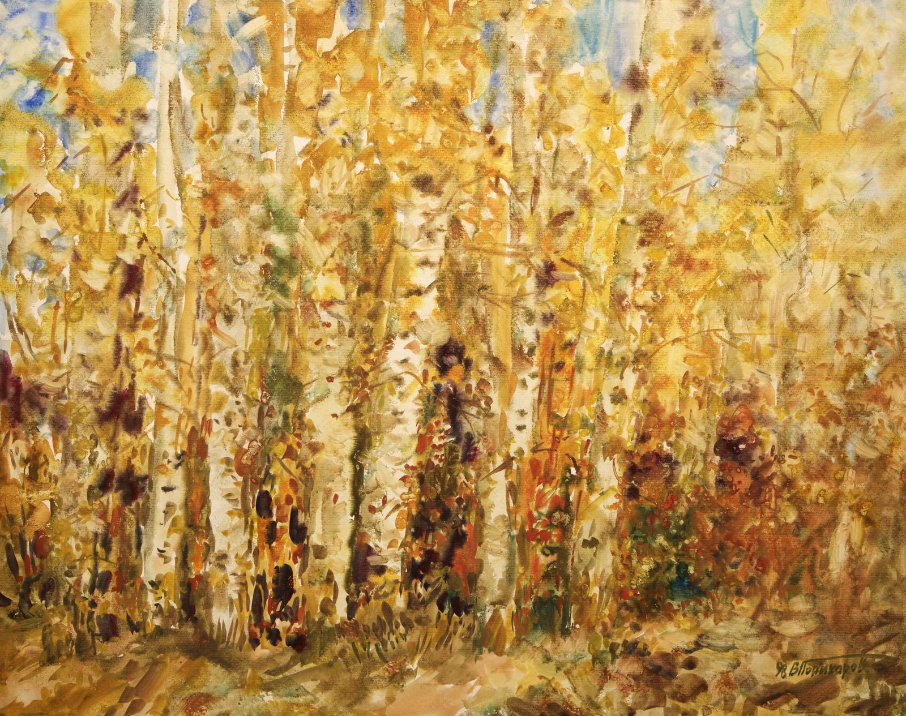
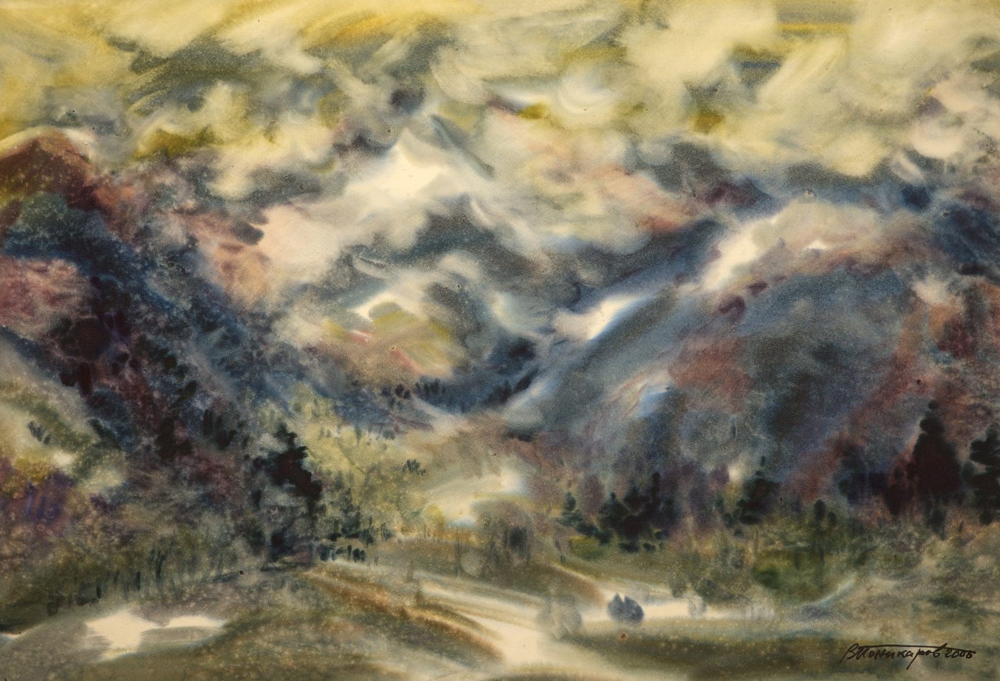

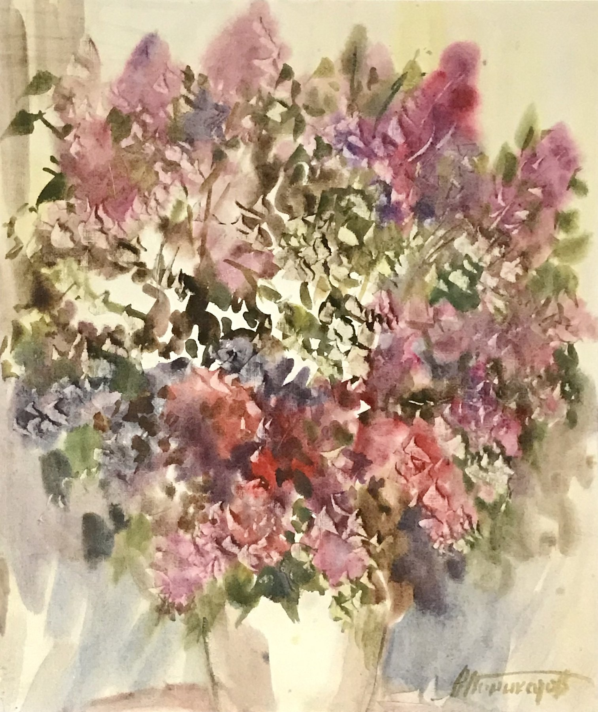

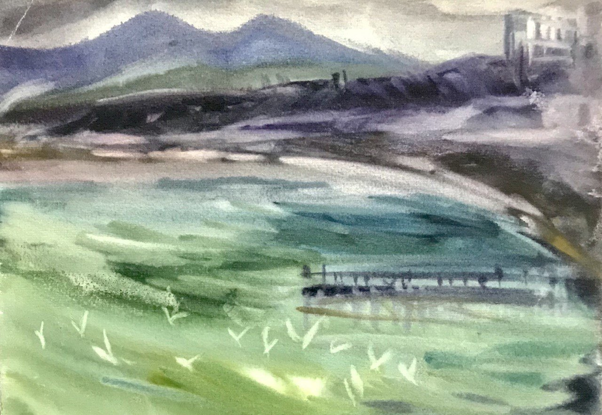

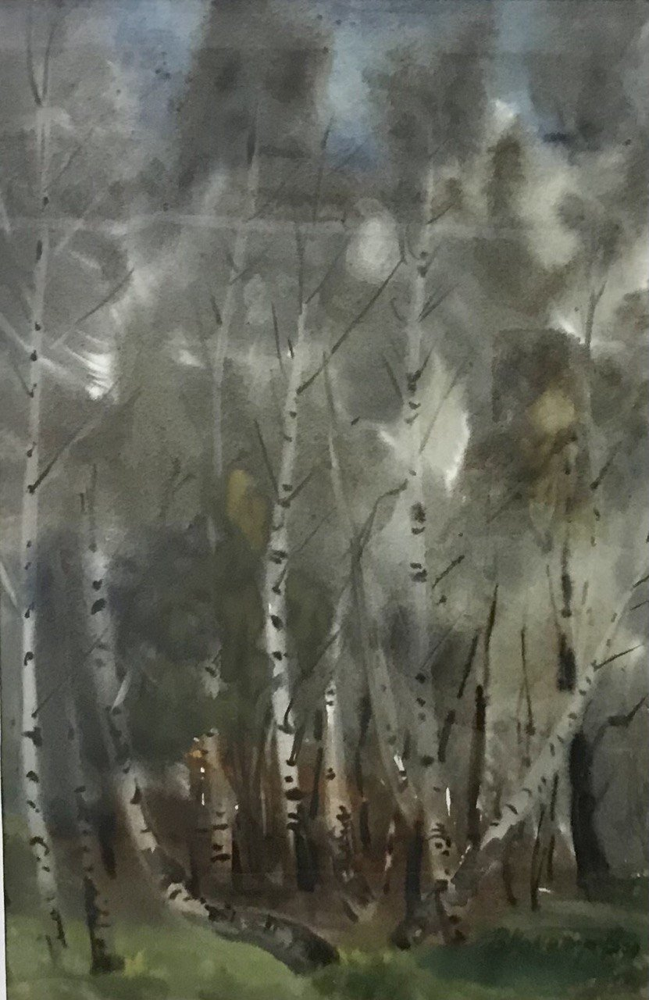

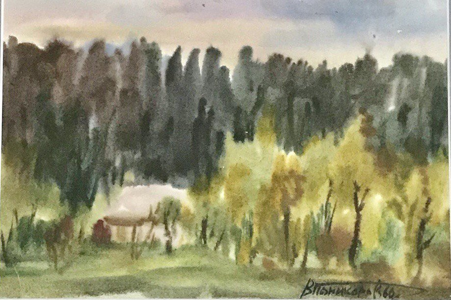
 Василь Андрійович Понікаров за роботою в майстерні, Одеса
Василь Андрійович Понікаров за роботою в майстерні, Одеса
Художник
Василь Андрійович Понікаров народився 26 серпня 1929 року і змалку жив у кольорі: його мати, Євдокія Гордіївна, розписувала печі та стіни сільських хат.
Він навчався в Одеському художньому училищі імені М. Б. Грекова та в Московському поліграфічному інституті, а 1971 року став членом Спілки художників СРСР. Шлях на все життя йому підказав учитель в Одесі:
«Тобі необхідно писати аквареллю. На мою думку, це — твоє!»Леонід Мучник, учитель в Одесі
Гран-прі в Парижі 1999 року на виставці приватних колекцій акварелі. Заслужений художник України. Помер 16 травня 2014 року. 2017 року родина передала одну з його робіт із маками до Міжнародного музею акварелі у Фабріано (Італія).
Васи́ль Андрі́йович Поніка́ров (*26 серпня 1929, Валя Ґоцілуй, Молдовська АРСР — † 16 травня 2014, Одеса) — український художник та графік, народжений у Автоно́мній Молда́вській Соціалісти́чній Радянській Респу́бліці у складі України.
1971 — член Спілки художників СРСР, заслужений художник України. Переможець одеської номінації «Художник року-2002». Проживав в Одесі.
Мама, Євдокія Гордіївна — майстриня-рукодільниця, розписувала яскравими фарбами печі, стіни мазанок — собі і сусідам «на радість».
1958 року закінчив Одеське художнє училище ім. М. Грекова — навчався у Леоніда Мучника та Михайла Жука, Теофіла Фраєрмана, 1970-го — Московський поліграфічний інститут, навчався у Ю. К. Борджеляна, Гліба Тимофійовича Горощенка, Бориса Анатолійовича Шолохова.
З 1965 року учасник виставок, від 1971-го — член НСХУ. 1984 та 1986 року відбувалися персональні виставки в Одесі, 1987 — у Києві.
1999 року на виставці приватних колекцій акварелі в Парижі здобув гран-прі.
Працював в напрямі колористики.
Роботи виставлялися на міжнародних виставках —
Персональні виставки — в Одесі, 1984, 1986, 1987, 1999, 2009 роки.
Роботи зберігаються в художніх музеях Одеси, Харкова, Очаківському музеї мариністичного живопису, Ізмаїльському історичному музеї, Прилуцькому краєзнавчому музеї, Міжнародному музеї акварелі (м. Фабріано, Італія) та приватних зібраннях.
Текст зі статті Вікіпедії, CC BY-SA 4.0.
Преса
Торкніться вирізки, щоб прочитати статтю повністю
Подорожі
З 1980 року він ходив штатним художником на океанському лайнері «Федір Шаляпін». З подорожей він привозив етюди та цілі серії гаваней і міст.
Пірей · Рим · Барселона · Стамбул · Каїр · Париж · Лондон


Архів майстерні
Пейзажі, море й узбережжя, натюрморти та квіти: кожну роботу пронумеровано, обміряно й описано. Родина готує архів до майбутніх виставок і каталогу.
Роботи зберігаються у зібраннях
а також у приватних колекціях Франції, Бельгії, Німеччини, Італії, Ізраїлю, Норвегії, Латвії та США
Контакти
З питань виставок, тимчасової передачі робіт музеям, досліджень і дозволів пишіть родині художника.
Написати родиніfamily@ponikarov.com